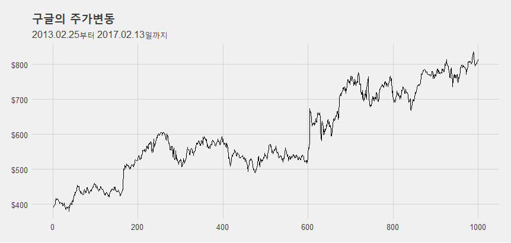

교육, 고용, 코로나 데이터를 활용한 시계열 데이터 분석 in R
2021-02-25
Chapter 1 시계열 데이터
우리는 연도별 학생수, 날짜별 기온 변화 등과 같이 시간의 흐름에 따라 수집된 데이터를 흔히 볼 수 있다. 특히 가장 흔하게 볼 수 있는 시계열 데이터는 주식시장에서 볼 수 있는데 주식에 관련된 대부분의 데이터가 시계열 데이터이다.

시계열 데이터는 과거 시간의 흐름에 따라 데이터를 확인하고 앞으로 데이터가 어떻게 흘러갈껀가를 예측하기 위해 사용된다. 지금까지의 시계열 데이터를 활용하는 사례중에 우리 곁에 가장 가까이서 많이 쓰는 사례는 뭐니뭐니해도 우리나라의 계절 절기가 아닐까 한다. 우리나라 달력에는 입동, 우수, 초복 등 날씨가 변경되는 각종 절기가 표현되는데 우리 조상들은 오랜 시간동안 1년 중 시간의 변화에 따라 기후의 변화를 파악했다. 이를 절기로 기록했고 이를 통해 기후의 변화를 예측했다.
지금도 이런 시간적 변화에 따라 발생하는 데이터의 변화량을 파악하는 응용이 많이 있는데, 특히 경제지표 예측, 상품 수요 예측, 관광객 수요 예측, 전기 수요 예측 등과 같이 경제, 경영 분야뿐만 아니라 많은 산업에서 많이 사용되고 있다.
이와 같이 시계열 데이터는 과거의 데이터 패턴을 분석하여 유사한 데이터 흐름이 지속된다는 가정하에 미래 특정한 기간동안의 데이터 흐름을 분석하기 위해 사용되고 있다. 특히 시간적 변화에 따라 앞으로의 결과를 예측하는 것은 정부의 정책을 수립하는데, 기업에서 비지니스 전략을 수립하는 과정에서 많이 사용되고 있기 때문에 시계열 데이터에 대한 중요성이 매우 높다.
최근 머신러닝이 발달함에 따라 데이터를 기반으로 예측하는 알고리즘들이 많이 소개되고 사용되고 있다. 그 알고리즘들은 지도학습(Supervised Learning), 비지도학습(Unsupervised Learning), 강화학습(Reinforcement learning) 등으로 분류한다. 이런 알고리즘을 사용하여 모델을 생성하고 새로운 데이터가 주어졌을때 해당 모델을 통해 예측 값을 산출해내는 작업을 수행한다. 그러나 시계열 데이터를 위한 모델은 지도학습, 비지도학습, 강화학습의 범주에 포함시키지 않는다. 하지만 Azure, AWS, H2O와 같은 머신러닝 플랫폼에서는 대부분 시계열 분석을 위한 알고리즘을 포함하고 있고 맥킨지에 의하면 시계열 데이터의 가치는 텍스트나 오디오, 비디오보다 높다고 평가하고 있다.2
이와 같이 중요한 시계열 데이터의 모델링과 예측방법은 최근 머신러닝 알고리즘을 시계열 데이터에 적용하여 미래 예측을 하는 방법들이 속속 소개되고 있고 Facebook에서는 자사에서 개발한 시계열 데이터 분석 알고리즘(Prophet)을 소개하는 등 시계열 데이터에 대한 예측 알고리즘도 발전하고 있다.
이제 당신은 시계열 데이터를 저장하고, 시각화하고, 핸들링하고, 모델링하고, 예측하는 여정을 시작하게 된다.